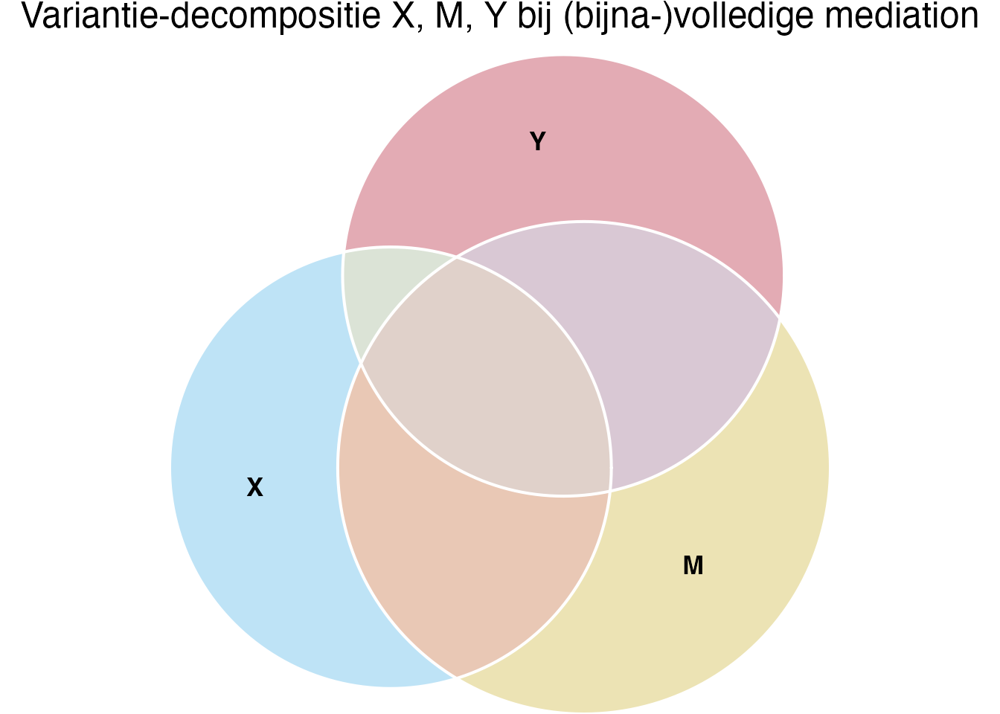
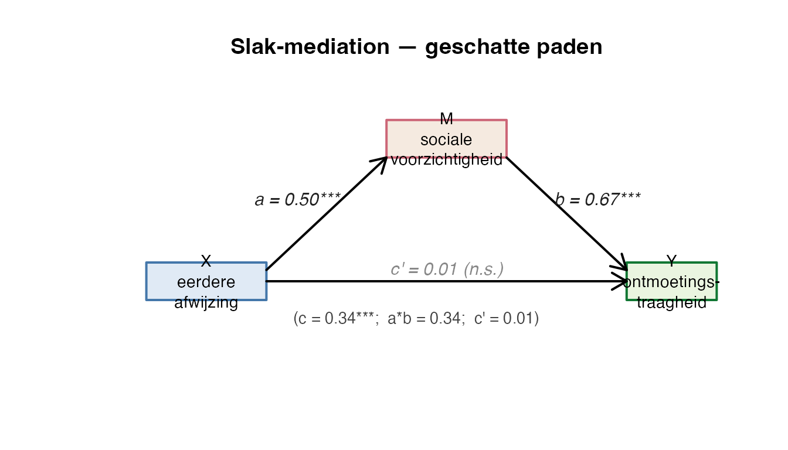
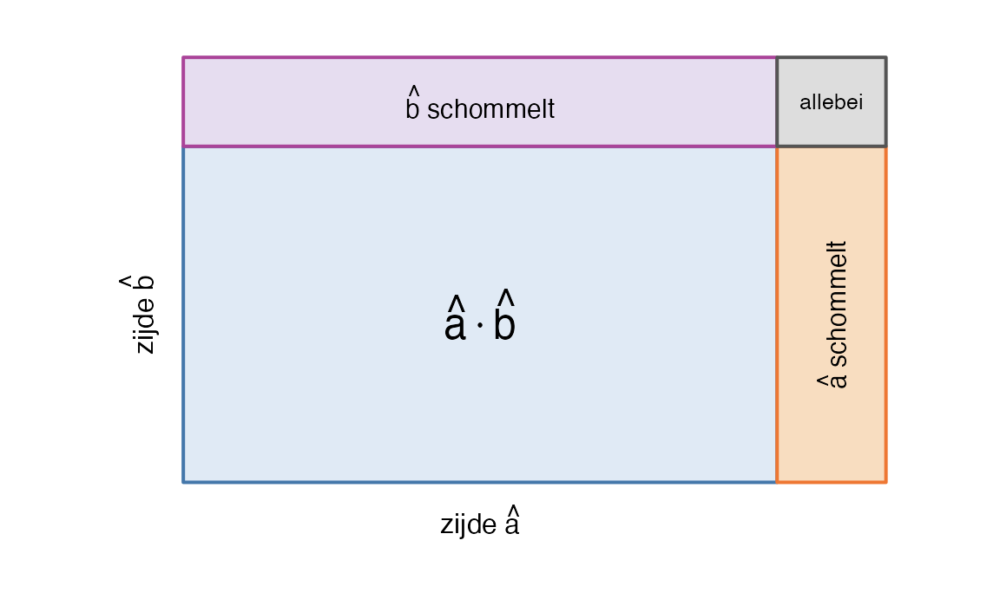

Een slak zat onder een blad en keek naar drie andere slakken die kwamen aanlopen.
De eerste droeg iets op zijn rug. Hij gaf het door aan de tweede. De tweede droeg het verder, en legde het bij de derde af.
“Mooi,” dacht de slak, “het pakje gaat van de eerste naar de derde — maar nooit rechtstreeks. Altijd via die tussen-slak.”
Hij dacht er nog een tijd over door, want zo werkte zijn eigen leven ook. Iemand zei iets, en het effect kwam pas later — via een gedachte die hij eerst nog moest verwerken. Niet rechtstreeks. Niet als bevel. Als doorgegeven stokje.
Een statisticus die dit had gezien zou hebben geknikt en mediation hebben gezegd. Een effect dat niet direct loopt, maar via een tussenpersoon.
Negentig slakken doen mee in dit thema. Bij elk is genoteerd hoe vaak hij in eerdere ontmoetingen werd weggetrokken (eerdere_afwijzing, ), hoe sociaal voorzichtig hij in zijn binnenste is geworden (sociale_voorzichtigheid, ), en hoe traag hij naar een nieuwe slak toe kruipt (ontmoetingstraagheid, ). De vraag is niet of samenhangt met — dat doet het waarschijnlijk wel. De vraag is of zijn werk doet via , of ook buiten om.
De techniek heet mediation-analyse. Bij mediation stel je drie vragen aan je gegevens:
Loopt het effect via ? — schat het indirecte effect en toets het met de Aroian-toets.
Hoeveel blijft er over zonder ? — schat het direct-effect door en samen op te regresseren. Bij volledige mediation: .
Klopt het allemaal wel? — temporele volgorde ( vóór vóór ), geen vergeten verstoorder die de samenhang kunstmatig opklopt, en lineaire patronen.
TipWat je na dit thema moet kunnen
Na dit thema kun je:
herkennen wanneer mediation de juiste techniek is;
uit drie regressies het totale, het directe en het indirecte effect van op halen, en ze in een pad-diagram zetten;
nagaan of en allebei significant zijn;
de proportie mediated uitrekenen, en het indirecte effect toetsen met de Aroian-toets;
suppressie herkennen aan de tekens van de paden;
uitleggen hoe een pijl de andere kant op kan wijzen, of hoe een verstoorder het verband tussen twee variabelen kan maken.
In R doe je dat met lm(), summary() en pnorm().
Drie dingen horen er ook bij, al oefent dit hoofdstuk ze niet: de effecten ook gestandaardiseerd uitrekenen (in β’s; hoe je van naar β komt, staat in thema 1), suppressie herkennen in een rij correlaties (ook thema 1, onder Suppressie — waarom het gedeelde stuk negatief kan worden), en een schijncorrelatie herkennen: een correlatie tussen twee variabelen die verdwijnt zodra je voor een derde corrigeert.
MacKinnon, Fairchild en Fritz (2007) beschrijven kort een rij uitbreidingen, zoals bootstrap en meerdere mediators. Het idee erachter is goed om te kennen; rekenen doe je er in dit oefenboek niet mee. Ze staan op een rij in Uitbreidingen uit MacKinnon, Fairchild en Fritz (2007), aan het eind.
Pas wat daarna komt, onder Wat blijft liggen, is extra: leesvoer voor wie verder wil.
OpmerkingA. Wat is mediation? — een estafette
Stel je voor: een estafetteloop met drie lopers. Loper-1 () krijgt het stokje en geeft het aan loper-2 (). Loper-2 geeft het aan loper-3 (). Het stokje legt de hele afstand af, maar telkens via de tussenstap.
Dat is wat mediation modelleert. Drie paden:
-pad: . Hoe groot is de stoot van loper-1 op loper-2? Geschat met lm(M ~ X).
-pad: , controlerend voor . Hoe groot is de stoot van loper-2 op loper-3, los van wat loper-1 ook nog rechtstreeks doet? Geschat met lm(Y ~ X + M), is de coëfficiënt op .
-pad: , controlerend voor . Heeft loper-1 nog een eigen sprint naar loper-3, naast de estafette? Dezelfde regressie, is de coëfficiënt op .
Het totaal-effect is de gewone bivariate samenhang van op , zonder in het model. Geschat met lm(Y ~ X). Dat is wat een buitenstaander zou meten als hij niet weet dat tussenin zit.
De decompositie van het totaal-effect:
In woorden: het totaal-effect is wat rechtstreeks aan levert () plus wat via aan levert ( keer , het indirect-effect). Bij volledige mediation is en doet zijn werk volledig via . Bij partiële mediation blijft staan en is er ook een directe route. Bij suppressie zijn en tegengesteld in teken — de tussen-loper draagt het stokje tegen loper-3 in. Dan kan . Daarover meer bij Suppressie, verderop.
OpmerkingB. De vier stappen van Baron en Kenny (1986) — en welke echt nodig zijn
De klassieke aanpak heet de causal steps: vier stappen, met drie regressies. Bij elke stap hoort de vraag of hij nodig is om van mediation te spreken. Het antwoord verschilt per stap:
Stap
Regressie
Wat je toetst
Nodig voor mediation?
1
lm(Y ~ X)
het totale effect van op
nee
2
lm(M ~ X)
het pad van naar
ja
3
lm(Y ~ X + M)
het pad van naar , gecontroleerd voor
ja
4
dezelfde als stap 3
het directe effect van op , gecontroleerd voor
nee
Waarom stap 1 niet nodig is. Het directe effect en het indirecte effect van op kunnen een tegengesteld teken hebben en elkaar opheffen. Dat heet inconsistente mediation. Het totale effect is dan klein of nul, terwijl er wél een effect van op via loopt. Wie stap 1 als poortwachter gebruikt, stuurt precies dat geval ten onrechte weg. Verderop, bij suppressie, zie je met echte getallen hoe het indirecte effect tegen het directe in werkt, waardoor het totale effect veel kleiner uitvalt dan het directe.
Waarom stap 4 niet nodig is. Stap 4 vertelt je of er naast de weg via nog een directe weg van naar loopt: heet volledige mediation, een die duidelijk van nul verschilt heet partiële mediation. Dat onderscheid zegt iets over de vorm van de mediation, niet over de vraag óf er mediation is.
Niet nodig betekent: geen voorwaarde om van mediation te spreken. Uitrekenen doe je stap 1 en 4 wél, want zonder en heb je geen proportie mediated en geen onderscheid tussen volledig en partieel.
Stap 2 en 3 zijn dus de kern: zijn en allebei significant, dan wijst dat op mediation. Maar dat zijn twee losse toetsen, en het indirecte effect is één ding. Daarom toets je dat daarna in één keer, met de Aroian-toets (zie De Aroian-toets verderop).
OpmerkingC. Slak-frame — wat onderzoeken we?
De slak ervaart iets sociaals — vroege afwijzing, kleine missers, weggetrokken voelers. Hij ontwikkelt daaruit een innerlijke voorzichtigheid: een soort sociale buffer voor toekomstige ontmoetingen. En in nieuwe ontmoetingen vertalen zich beide samen in zijn waargenomen gedrag: traag of vlot naar een nieuwe slak toe.
De vraag van dit thema: gaat het effect van eerdere afwijzing op huidige ontmoetingstraagheid grotendeels via de sociale voorzichtigheid, of klimt afwijzing rechtstreeks in het gedrag?
OpmerkingHoe dit hoofdstuk leest
Dit hoofdstuk volgt dezelfde drie-laagse structuur als thema 1 t/m 6:
Verhaal-frame — wat de slak doet of denkt.
Algemene vorm — abstract, statistiek-Latijn met X, M, Y en mijn_data.
Voor onze dieren — uitvoerend, met # hekjes en concrete namen.
Plus de antwoorden in een dichtgeklapt kader: die open je pas ná je eigen poging. T-vragen vlechten zich tussen de hoofdvragen door om je rekenintuïtie te oefenen.
Werkmaterialen — R-pakketten en functies
De slak pakt zijn gereedschap
Gereedschap
Waar het voor is
Pakket
lm(Y ~ X)
Totaal-effect
base
lm(M ~ X)
-pad —
base
lm(Y ~ X + M)
-pad en -pad samen
base
summary(lm_obj)$coefficients
Coëfficiënten + + +
base
pnorm()
-waarde bij de van de Aroian-toets
base
bda::mediation.test()
Aroian-toets als controle (kolom Aroian)
bda
OpmerkingWaarom drie aparte regressies en geen pakket-wrapper?
R kent geen mediation()-functie in base; pakketten als mediation, lavaan en bda doen het wrapper-werk. De route met de hand volstaat: drie OLS-regressies en daarna één Aroian-toets, met pnorm() voor de -waarde. Dat zie je hieronder. Het pakket bda::mediation.test() is een snelle controle achteraf — niet de hoofdtechniek.
Notatie — symbolen voor mediation
OpmerkingSleutelsymbolen in dit hoofdstuk
In dit oefenboek zie je telkens dezelfde notatie:
— de onafhankelijke variabele (predictor). Hier: eerdere_afwijzing.
— de mediator. Hier: sociale_voorzichtigheid.
— de afhankelijke variabele (outcome). Hier: ontmoetingstraagheid.
— geschatte regressiecoëfficiënt van op (uit lm(M ~ X)).
— geschatte regressiecoëfficiënt van op , controlerend voor (uit lm(Y ~ X + M)).
— geschat totaal-effect van op (uit lm(Y ~ X)).
— geschat direct-effect van op , controlerend voor (uit lm(Y ~ X + M)).
— geschat indirect-effect via .
, — standaardfouten van en .
— de toetsgrootheid van de Aroian-toets op .
Voor inferentie spreek je over de populatie-parameters , , , (asterisk-notatie); voor rapportage over de geschatte , , , . Statistische symbolen staan cursief, zoals in APA: , , , , , , , , , , , , en ook , dat uit twee letters bestaat. Dat geldt in een formule net zo goed als in een APA-zin.
TipWat moet je echt uit je hoofd kennen?
Stampen is een vies woord buiten de toetsweek, maar daar binnen helpt het écht. Voor mediation zijn er vijf dingen die je zonder spiekblad moet kunnen oproepen — herhaal ze hardop tot ze blijven plakken:
Decompositie-identity: — het totaal-effect splitst in een direct stuk en een indirect stuk. Geen toeval, een algebraïsche noodzakelijkheid bij OLS.
Het kruis in de Aroian-formule: . Krijg je de formule erbij, dan is wat je zelf meebrengt dat je hem goed invult: hoort bij , en bij . Dat kruis draai je onder tijdsdruk makkelijk om.
De Aroian-: . Dit is gewoon “geschat effect gedeeld door zijn standaardfout” — net als bij elke andere - of -toets.
De heilige voor tweezijdig . Geen -tabel meer nodig — vanaf verwerp je .
Decompositie van het totaal: en . Samen moeten ze (op afrondingsfouten na) optellen tot 1. Elk apart hoeft níét tussen 0 en 1 te liggen: bij suppressie wordt de proportie mediated negatief of groter dan 1 — dat zie je bij Suppressie, verderop. En het is géén percentage verklaarde variantie: je verdeelt het totale effect in een direct en een indirect stuk, niet de variantie van .
Deze vijf zijn samen het skelet van de Aroian-route. Als ze in je hoofd staan, hoef je tijdens het tentamen alleen nog netjes de cijfers te combineren — niet meer na te denken wat-precies-waar.
Vuistregels zijn afspraken, geen wetten
De drempels in dit oefenboek zijn breed gangbare conventies — niet universeel:
Welke toets: de Aroian-toets. Hij heeft twee buren met een net andere standaardfout: de klassieke Sobel-toets en de Goodman-toets. De Aroian-toets neemt alle drie de termen onder de wortel mee, en krijgt zo van de drie de grootste standaardfout. Hij noemt een indirect effect dus het minst snel significant: van de drie is hij de voorzichtigste. De buren staan in het dichtgeklapte kader Voor wie verder wil — de twee buren van de Aroian-toets.
Volledige vs partiële mediation: niet-significant na correctie voor → volledige mediation. wel significant maar duidelijk kleiner dan → partiële. Beide aannames over de causale structuur — geen wiskundig bewijs. Dat onderscheid werkt in de praktijk slecht. Eén reden: of significant is, hangt ook af van de grootte van je steekproef. In een grote steekproef is bijna elke significant, en heet dus bijna elke mediation partieel.
Decompositie-controle: moet exact uitkomen op de getallen (afgezien van afrondings-ruis). Klopt dat niet, dan zit er een fout in je code of je data — vermoedelijk verschillende tussen de drie regressies door missing-cases-deletie.
Causale aannames: temporele volgorde ( vóór vóór ), geen ongemeten verstoorder die en allebei beïnvloedt, lineaire paden. Mediation toetst niet de causaliteit — die nemen we aan.
Met deze regels rekent dit oefenboek. Een ander handboek trekt een grens soms net anders; daarom zijn het afspraken en geen natuurwetten.
OpmerkingCode in dit hoofdstuk — wat moet je kunnen typen?
Code is standaard open als je hem zelf moet kunnen typen: lm(Y ~ X), lm(M ~ X), lm(Y ~ X + M), summary(.)$coefficients, de Aroian-formule met de hand, en pnorm() voor de -waarde. Code die alleen een plaatje of een tabel maakt — Venn-diagrammen, pad-diagrammen, gt-tabellen — staat ingeklapt met een knopje “Toon code”. Klap hem open als je nieuwsgierig bent.
7.0 Project- en datavoorbereiding
Aantekeningen netjes, paden kloppen
Download de bron van dit oefenboek (de zip op de voorpagina), pak hem uit en dubbelklik op mvda_werkboek.Rproj — één project voor alle thema’s. Open daarna 07_mediatie/07_mediatie.qmd en draai de code vanuit dat bestand: RStudio voert een chunk uit in de map van het hoofdstuk, dus de paden kloppen. De data van dit thema ligt in 07_mediatie/data/, de helper-functies in common/R/. Niets te installeren als de pakketten (tidyverse, bda, eulerr) op je computer staan; anders één keer:
Per slak vier waarden: een slak_id plus drie continue scores op de schaal -. De drie variabelen vormen het voorgestelde mediation-pad: eerdere_afwijzing () → sociale_voorzichtigheid () → ontmoetingstraagheid ().
OpmerkingWat zit nog meer in slak_ontmoetingen.RData?
Naast slak_ontmoetingen () bevat het bestand een tweede object: slak_suppressie ( andere slakken, een aparte studie naar bouwvaardigheid en perfectionisme). Dat tweede object gebruiken we pas verderop, bij Suppressie. Tot dan is slak_ontmoetingen genoeg.
7.1 Het mediation-model fitten en interpreteren
Drie regressies, één estafette
“Eerst kijken of het pakje überhaupt aankomt,” zei de slak. “Daarna of de tussen-slak het krijgt. Dan of de tussen-slak het doorgeeft. En tot slot: blijft er nog wat over voor de directe weg?”
OpmerkingVoor je gaat rekenen — vijf vragen aan jezelf
Het stappenplan, opnieuw, met de techniek-keuze als laatste stap.
Wie of wat wordt er gemeten?De slak heeft slakken genoteerd, elk drie keer (één , één , één ).
Wat wordt er gemeten?Drie variabelen: eerdere_afwijzing, sociale_voorzichtigheid, ontmoetingstraagheid. Allemaal continu op een - schaal.
Onafhankelijk of afhankelijk?De onderzoeksvraag stelt een causaal pad voor: () . Dus = eerdere_afwijzing, = sociale_voorzichtigheid, = ontmoetingstraagheid. De rol van is bemiddelend, niet zomaar een tweede predictor.
Meetniveau van elke variabele?Alle drie interval (-).
Welke techniek? Doorloop de beslisboom:
flowchart TD
A[Stel je een<br/>causaal pad voor?] -->|nee, alleen samenhang| B[gewone regressie<br/><i>thema 1</i>]
A -->|ja, $X \to Y$ via $M$| C[Welke variabelen?]
C -->|alle drie continu| Z[Mediation-analyse<br/><i>dit thema</i>]
C -->|$M$ binair| D[Logistieke mediation]
C -->|herhaalde metingen op M| E[Multilevel mediation]
A -->|alleen interactie| F[Moderation-analyse<br/><i>geen mediation</i>]
style Z fill:#faf3e2,stroke:#c9a05a,stroke-width:2px
OpmerkingPijltjes-overzicht — alle MVDA-technieken in één tabel
Dezelfde keuze, anders genoteerd. Lees als predictor(en) (meetniveau) → DV(s) (meetniveau):
#
Predictor(en)
DV(s)
Techniek
dich |X|
|Y| int
-toets
nom 3+lvl |X|
|Y| int
éénweg ANOVA
1
int |X X …|
|Y| int
MRA — thema 1
2
nom |X X|
|Y| int
factorial ANOVA — thema 2
3
nom + int |X C|
|Y| int
ANCOVA — thema 3
4
bo(in) |X|
|Y| bin
LRA — thema 4
5
nom |X|
|Y₁ Y₂ …| int
MANOVA — thema 5
6
within-subject momenten
|Y₁ Y₂ Y₃ Y₄| int
RMA — thema 6
7
indirect via
pad
Mediation — thema 7
Drie continue variabelen, één voorgesteld causaal pad. Antwoord: mediation-analyse via de stappen van Baron en Kenny plus de Aroian-toets.
BelangrijkMediatie ≠ moderatie — wees scherp op tentamen-stellingen
Bij mediatie loopt het effect via een tussenstap: . Eén pad, doorgegeven als estafette. Het kernwoord in tentamen-stellingen is meestal “via” of “omdat” of “door middel van”.
Bij moderatie verschilt het effect van X op Y afhankelijk van het niveau van een derde variabele . Geen pad, maar een interactie (zoals in tweeweg-ANOVA, thema 2 — hoofdeffect A, hoofdeffect B, en de interactie A × B). Het kernwoord is meestal “sterker bij”, “alleen bij” of “hangt af van”.
In tentamen-stellingen kan een vraag over mediatie misleidend moderatie-taal bevatten en omgekeerd. Tentamen-test: lees de stelling letterlijk over en vraag jezelf: “gaat het hier om iets dat via iets anders loopt, of om iets dat anders sterk is bij verschillende niveaus?”
Probeer die twee dingen nooit door elkaar te halen — ze toetsen wezenlijk andere modellen.
T1 — Techniek-keuze: mediation, moderation, gewone regressie of pad-analyse?
OpmerkingVraag T1 — Pen-en-papier
Voor elk vignet: kies tussen mediation, moderation, gewone regressie of pad-analyse.
a)Een onderzoeker vermoedt dat eenzaamheid () leidt tot minder slaap (), wat weer leidt tot meer prikkelbaarheid ().
b)Een onderzoeker vermoedt dat het effect van een training () op prestatie () sterker is bij mannen dan vrouwen ().
c)Een onderzoeker wil weten of leeftijd, opleiding en inkomen samen prestatie voorspellen, zonder een causaal pad te veronderstellen.
d)Een onderzoeker vermoedt een keten: pestervaring () → zelfbeeld () → vermijding () → eenzaamheid (). Twee mediators in serie.
OpgeletAntwoord T1 — open na je eigen poging
a) Een keten met één mediator mediation-analyse. Drie regressies plus de Aroian-toets — het hoofdspoor van dit thema.
b) Een interactie tussen voorspellers (training geslacht) moderation-analyse. Mediation onderzoekt het pad; moderation het verschil-in-effect. Wezenlijk andere vraag.
c) Geen voorgesteld causaal pad, alleen samenhang gewone regressie (thema 1). Mediation vereist een vooraf-veronderstelde keten — anders is het data-fishing achteraf.
d) Twee mediators in serie pad-analyse (sequential mediation). Strikt genomen mediation met meerdere mediators; in R met het pakket lavaan of mediation. Kort beschreven onder Multiple mediators verderop.
Vuistregel. Causaal pad via een tussenpersoon = mediation. Verschil-in-effect tussen groepen of niveaus = moderation. Samenhang zonder pad = gewone regressie. Meer dan één tussenpersoon = pad-analyse / SEM.
7.1.a Verkenning — gemiddelden, correlaties en scatter
Voor onze dieren. Deze verkenning staat in twee schrijfwijzen naast elkaar, in tabbladen. Base R staat vooraan en is wat je nodig hebt; dplyr is er om te kijken.
library(dplyr) # één keer per R-sessie; library(tidyverse) laadt hem ook# Het pijpje |> geeft door wat links staat aan de functie rechts.# summarise() perst de tabel samen tot één regel; across() zegt: doe dat# voor elk van deze drie kolommen.slak_ontmoetingen |>summarise(across(c(eerdere_afwijzing, sociale_voorzichtigheid, ontmoetingstraagheid), mean)) |>round(2)
b) Welke twee variabelen hangen het sterkst samen? Welke het zwakst?
c) Past het patroon bij een mediation-keten? Zou je en allebei groot verwachten?
d) Wat zegt in het licht van en ? Kunnen ze allemaal positief?
e) Wat zou je in de scatter-matrix willen zien dat een mediation-patroon ondersteunt?
OpgeletAntwoord 7.1.a — open na je eigen poging
In gewone woorden.
slakken.
De sterkste samenhang is tussen sociale_voorzichtigheid en ontmoetingstraagheid (); de zwakste tussen eerdere_afwijzing en ontmoetingstraagheid (). ligt daar tussenin.
Bij een mediation-keten verwacht je en allebei stevig en niet-nul (anders is er geen pad om langs te lopen).
kan in principe alle waarden aannemen — bij volledige mediation hangt alleen via samen met , en is , vergelijkbaar met de waargenomen . Klopt dus.
In de scatter-matrix wil je drie positieve en lineaire clouds zien, geen kromming en geen extreme outliers.
APA-stijl.
Bij slakken bedroegen de gemiddelden () voor eerdere afwijzing, () voor sociale voorzichtigheid en () voor ontmoetingstraagheid. De correlaties waren positief en in lijn met een mediation-patroon (, , ).
T2 — Decompositie — handrekenen
OpmerkingVraag T2 — Pen-en-papier
Een onderzoeker vond bij een mediation-analyse: , , .
a) Bereken het indirect-effect .
b) Bereken het totaal-effect via de decompositie.
c) Welk percentage van het totaal-effect loopt via ? (proportie mediated)
d) Bij welke waarden van zou je van volledige mediation spreken? Bij welke van partiële?
OpgeletAntwoord T2 — open na je eigen poging
a) — het indirect-effect via .
b) .
c) Proportie mediated . Tweederde van het totaal-effect loopt via .
d)Volledige mediation: en niet-significant na controle voor . Partiële: blijft significant maar is kleiner dan . De grens is een conventie — sommige onderzoekers eisen niet-significant en voor “volledig”; anderen alleen het eerste.
Inzicht. De decompositie is geen toevallige eigenschap maar een algebraïsche identiteit van OLS-regressie. Klopt het op de getallen niet, dan is er iets mis (verschillende , missende cases, of een coderingsfout). Het is je eigen sanity-check.
7.1.b De drie regressies — totaal, -pad, +-pad
Algemene vorm.
# Stap 1: totaal-effect $c$ — Y op X zonder M.fit_total <-lm(Y ~ X, data = mijn_data)summary(fit_total)$coefficients# Stap 2: a-pad — M op X.fit_a <-lm(M ~ X, data = mijn_data)summary(fit_a)$coefficients# Stap 3: b-pad en c'-pad — Y op X en M samen.fit_bc <-lm(Y ~ X + M, data = mijn_data)summary(fit_bc)$coefficients
c) , , — -pad sterk significant. , , — direct-effect verwaarloosbaar en niet-significant na controle voor . Beide tekens positief; vrijwel nul.
d) kromp tot — bijna helemaal verdwenen na controle voor sociale voorzichtigheid. Dat wijst op (bijna) volledige mediation: het effect van eerdere afwijzing op ontmoetingstraagheid loopt nagenoeg helemaal via de sociale voorzichtigheid. Geen meetbare directe weg.
Inzicht. Een die instort tot bijna nul is het meest overtuigende mediation-signaal dat je kunt krijgen. Bij partiële mediation zou kleiner zijn dan , maar nog steeds nul-significant.
Op de getallen: , plus , samen — wat exact gelijk is aan . De algebra van OLS klopt: het totaal-effect is per constructie de som van direct- en indirect-effect. Geen wonder, geen toeval; gewoon rekenen.
De proportie mediated is , ongeveer 97%. Vrijwel alles loopt via .
OpmerkingVoor wie verder wil — mediation als Venn-diagram
Een Venn-diagram tekent verklaarde variantie, en die past slecht bij mediation. Toch kan zo’n plaatje laten zien wat betekent — zolang je weet waar het ophoudt.
Toon code (Venn-diagram)
library(eulerr)# Approximatieve gedeelde variantie-proporties op basis van r^2's# en de mediation-decompositie. Niet exact-area-proportional in# strikte zin — didactische illustratie.fit <-euler(c(X =6,M =6,Y =6,"X&M"=4,"X&Y"=0.2,"M&Y"=4,"X&M&Y"=3.8))plot(fit,fills =list(fill =c("#88CCEE", "#DDCC77", "#CC6677"), alpha =0.55),labels =list(col ="black", cex =1.1),edges =list(col ="white", lwd =2),main ="Variantie-decompositie X, M, Y bij (bijna-)volledige mediation")

Wat zie je? De overlap ligt vrijwel volledig binnen : de drie cirkels overlappen in een groot gezamenlijk stuk, en er blijft maar een klein stuk buiten over. (De tekening is schematisch, niet op schaal.) Dat is de visuele weergave van : nadat je uit de overlap haalt (statistisch controleren), blijft er bijna geen rechtstreekse --samenhang over. Bij partiële mediation zou dat stuk buiten duidelijk groter zijn.
Waar het plaatje ophoudt. Een Venn-diagram tekent gedeelde variantie. Mediation is strikt genomen een causaal pad-model met regressie-paden, niet een variantie-decompositie. De twee zijn alleen onder strenge voorwaarden verwisselbaar (alle paden positief, geen suppressie, geen ongemeten verstoorder). Een Venn kan bijvoorbeeld niet laten zien wanneer negatief is en positief: cirkels overlappen geen “negatieve” oppervlakte. Voor inconsistente mediation, verderop bij Suppressie, gebruik je daarom een pad-diagram met pijlen en getekende coëfficiënten.
De Venn werkt dus als intuïtief plaatje voor consistente mediation. Niet als bewijs, niet als rapportage-figuur: in een artikel zet je het pad-diagram uit de APA-rapportage, verderop, met de geschatte coëfficiënten op de pijlen.
BelangrijkDon’t: causale taal bij mediation op cross-sectionele data
“ heeft via een effect op .” Klinkt mooi. Op cross-sectionele data — alle drie tegelijk gemeten, geen randomisatie — is die zin ronduit overdreven. Mediation-coëfficiënten zijn dan niets meer dan voorwaardelijke samenhangen. “ hangt samen met , en hangt samen met , controlerend voor ” — punt. Geen “veroorzaakt”, geen “wordt verklaard door”. Het woordje via mag wél in de vaste naam het indirecte effect via : zo heet nu eenmaal, ook in de APA-zinnen hieronder. Wat je niet doet, is er een oorzaak van maken — niet “ veroorzaakt via ”.
Causaal spreken mag pas als het design het draagt: gemanipuleerd, of de drie metingen in de tijd na elkaar. Dat oefen je in T8.
OpmerkingVoor wie verder wil — causale taal in een artikel
Wie in een artikel de causale taal toch gebruikt, kan dat best doen — maar dan met een DAG, een causaal diagram met pijlen van oorzaak naar gevolg (Pearl, 2009; VanderWeele, 2015), expliciete identificatie-aannames, en in de discussie verplicht een zin als deze:
These conclusions rest on the assumption of no unmeasured confounders and on the temporal ordering .
Doe je dat niet, dan rapporteer je een keten van regressies en noem je dat hopelijk-causale-mediation. Reviewers houden niet van “hopelijk”.
# Eenvoudige driehoek X — M — Y met de geschatte paden op de pijlen.plot(NA, xlim =c(0, 10), ylim =c(0, 6),xlab ="", ylab ="", axes =FALSE,main ="Slak-mediation — geschatte paden")# Knopen (boxen).rect(0.5, 0.7, 2.5, 1.7, col ="#E0EAF5", border ="#4477AA", lwd =2)rect(4.5, 4.5, 6.5, 5.5, col ="#F5EAE0", border ="#CC6677", lwd =2)rect(8.5, 0.7, 10, 1.7, col ="#EAF5E0", border ="#117733", lwd =2)text(1.5, 1.2, "X\neerdere\nafwijzing", cex =0.9)text(5.5, 5.0, "M\nsociale\nvoorzichtigheid", cex =0.9)text(9.25, 1.2, "Y\nontmoetings-\ntraagheid", cex =0.9)# Pijlen.arrows(2.5, 1.5, 4.5, 4.5, length =0.15, lwd =2) # X -> M (a)arrows(6.5, 4.5, 8.5, 1.5, length =0.15, lwd =2) # M -> Y (b)arrows(2.5, 1.2, 8.5, 1.2, length =0.15, lwd =2) # X -> Y (c')# Pad-labels, uitgerekend uit de drie regressies (a_hat, b_hat, c_prime en# c_total komen uit 7.1.c) -- niet overtikken.p_van <-function(fit, term) summary(fit)$coefficients[term, "Pr(>|t|)"]sterren <-function(p) if (p < .001) "***"elseif (p < .01) "**"elseif (p < .05) "*"else" (n.s.)"label <-function(naam, est, p) paste0(naam, " = ", sprintf("%.2f", est), sterren(p))text(3.0, 3.4, label("a", a_hat, p_van(fit_a, "eerdere_afwijzing")),cex =0.95, font =3, col ="#222222")text(8.0, 3.4, label("b", b_hat, p_van(fit_bc, "sociale_voorzichtigheid")),cex =0.95, font =3, col ="#222222")text(5.5, 1.5, label("c'", c_prime, p_van(fit_bc, "eerdere_afwijzing")),cex =0.95, font =3, col ="#888888")# Footer.text(5, 0.2, paste0("(", label("c", c_total, p_van(fit_total, "eerdere_afwijzing")),"; a*b = ", sprintf("%.2f", a_hat * b_hat),"; c' = ", sprintf("%.2f", c_prime), ")"),cex =0.85, col ="#444444")

Het pad-diagram is wat je in een artikel zet, niet een Venn-diagram. Coëfficiënten op de pijlen, -waarden via sterren of expliciet in legenda. Dit is APA-conform voor mediation.
TipAPA-rapportage — drie regressies in lopende tekst
Een mediation-analyse onderzocht of het effect van eerdere afwijzing () op ontmoetingstraagheid () verloopt via sociale voorzichtigheid (). Het totaal-effect was significant, , , , . Het -pad was significant, , , , . Na opname van in het model was het -pad significant, , , , , terwijl het direct-effect , , , , niet meer afweek van nul. De decompositie kwam exact uit (). Dit patroon wijst op (bijna) volledige mediation door sociale voorzichtigheid.
Nog geen toets op het indirecte effect zelf — die volgt hieronder, in De Aroian-toets.
T3 — Wat als niet significant is — geen mediation?
OpmerkingVraag T3 — Pen-en-papier
In het oorspronkelijke stappenplan van Baron en Kenny (1986) moest significant zijn voordat je mocht doortoetsen. Hierboven, bij De vier stappen van Baron en Kenny, staat bij stap 1: niet nodig voor mediation.
a) Welke logica zat er achter de oude eis?
b) Waarom is stap 1 toch niet nodig? (Hayes, 2018, en MacKinnon, Krull en Lockwood, 2000, geven dit argument.)
c) Bedenk een hypothetisch geval waarin klein-en-niet-significant is terwijl duidelijk significant is. Hoe kan dat?
d) Wat toets je dan in plaats van stap 1?
OpgeletAntwoord T3 — open na je eigen poging
a) De logica achter de oude eis: als er überhaupt geen samenhang is tussen en , valt er niks te bemiddelen. Mediation moet iets mediëren.
b) Omdat inconsistente mediation (suppressie) precies dit oplevert: en tegengesteld in teken, samen klein. Het totaal-effect kan dan klein-en-niet-significant zijn, terwijl er wel degelijk een indirect pad loopt — het wordt alleen door het direct-pad geneutraliseerd.
c) Voorbeeld: , , , . Dan . Het totaal-effect lijkt nul — maar er bestaat wel degelijk een effect via (negatief) én een direct effect (positief), die elkaar perfect opheffen. Mediation-output zonder stap-1-poortwachter zou dit zien; mét stap 1 zou de analyse al na stap 1 stoppen.
d) De paden en (stap 2 en 3), en het indirecte effect in één keer met de Aroian-toets. Zo toets je de mediation-hypothese rechtstreeks, zonder als poortwachter.
Inzicht. De vier klassieke stappen blijven een handige kapstok, maar per stap verschilt of hij nodig is — en bij stap 1 is dat antwoord nee. Voor het gevoel is stap 1 fijn om te doen; nodig heb je hem niet. Bij gewone consistente mediation maakt het geen verschil; bij suppressie wel. Dat zie je verderop, bij suppressie, met echte getallen.
7.2 De Aroian-toets — formele toets op het indirecte effect
Eén product, één standaardfout
Een baby-slak vroeg of vanzelf significant zou zijn. De oude slak zei: “Soms wel. Vaker krijg je het bewijs door een aparte toets, omdat het product van twee schattingen een eigen onzekerheid heeft.”
“Een -waarde voor het stokje,” mompelde de slak. “Niet voor de eerste loper, niet voor de tweede, maar voor het product van wat ze samen overdragen.”
Je hebt net gecheckt: is pad significant? Ja. Is pad significant? Ja. Maar is het pad significant? Dat zijn twee losse dingen, en je wilt ze als één geheel toetsen. Daarvoor is de Aroian-toets. Zijn nulhypothese zegt dat het indirecte effect — het effect van op via — in de populatie nul is. De alternatieve hypothese zegt dat het van nul afwijkt.
OpmerkingDe Aroian-toets
Je ziet hem ook onder de naam Sobel test (Aroian version), en bda::mediation.test() drukt hem af in de kolom Aroian. Het is één en dezelfde toets: Sobel is de naam van de familie, Aroian de versie met drie termen onder de wortel. Vraagt een opgave kaal naar de Sobel-toets, kijk dan welke versie er bedoeld is; in dit oefenboek is dat altijd deze.
Waarom drie termen? is een schatting: in een andere steekproef was hij net anders uitgevallen, en hoeveel hij zo schommelt, is zijn standaardfout . Voor geldt hetzelfde. Zie het product als de oppervlakte van een rechthoek met zijden en :
Toon code (de rechthoek)
# Schematisch: geen data, alleen de vorm. Kleuren zonder rood-groenpaar; de# labels dragen de betekenis, niet de kleur.a <-6; b <-3.4; da <-1.1; db <-0.9par(mar =c(0.5, 0.5, 0.5, 0.5))plot(NA, xlim =c(-0.9, a + da +0.2), ylim =c(-0.8, b + db +0.2), asp =1,axes =FALSE, xlab ="", ylab ="")rect(0, 0, a, b, col ="#E0EAF5", border ="#4477AA", lwd =2)rect(a, 0, a + da, b, col ="#F8DDC0", border ="#EE7733", lwd =2)rect(0, b, a, b + db, col ="#E6DDF0", border ="#AA4499", lwd =2)rect(a, b, a + da, b + db, col ="#DDDDDD", border ="#555555", lwd =2)text(a /2, b /2, expression(hat(a) %.%hat(b)), cex =1.5)text(a + da /2, b /2, expression(hat(a) ~"schommelt"), srt =90, cex =0.95)text(a /2, b + db /2, expression(hat(b) ~"schommelt"), cex =0.95)text(a + da /2, b + db /2, "allebei", cex =0.8)text(a /2, -0.4, expression("zijde"~hat(a)), cex =1)text(-0.45, b /2, expression("zijde"~hat(b)), srt =90, cex =1)

De stroken laten zien hoe gróót een schommeling is, niet welke kant op.
Schommelt , dan groeit er rechts een strook bij: lang en breed. In het kwadraat is dat de term .
Schommelt , dan groeit er bovenop een strook bij: lang en breed. In het kwadraat: .
Schommelen ze allebei, dan komt er ook nog het hoekje bij: bij . In het kwadraat: .
Elke term onder de wortel is dus zo’n stuk in het kwadraat. Waarom in het kwadraat? Losse schommelingen tel je niet gewoon bij elkaar op: je telt hun kwadraten op en trekt aan het eind de wortel. Zo gaat het bij elke standaardfout. De tekening is niet op schaal: het hoekje is het product van twee kleine schommelingen, en daarom bijna altijd het kleinste stuk. Bij de slak is het ongeveer 1% van wat er onder de wortel staat.
Let op het kruis: hoort bij , en bij — kruiselings. De rechthoek laat zien waarom: de strook die ontstaat als schommelt, heeft de lengte van . Draai je die twee om, dan krijg je een getal dat er heel gewoon uitziet en toch fout is.
De toets behandelt als standaardnormaal. Bij is (tweezijdig), en verwerp je de nulhypothese dat het indirecte effect van op via in de populatie nul is.
7.2.a De Aroian-toets met de hand
TipDe heilige — uit je hoofd
Eén -waarde die je gewoon uit je hoofd moet kennen voor toetsen tegen tweezijdig: . Bij die waarde ligt in de twee staarten van een standaardnormale verdeling samen een kans van , dus per staart. Vanaf verwerp je .
Voor de Aroian-toets betekent dat:
Bij — zoals in dit voorbeeld — zit je ver buiten de tabel. Géén -tabel meer nodig: gewoon noteren en doorgaan. Dezelfde keert terug bij betrouwbaarheidsintervallen en bij standaardgebruik in LRA (thema 4).
Algemene vorm.
# Haal de coëfficiënten + standaardfouten op.a_hat <-coef(fit_a)[["X"]]b_hat <-coef(fit_bc)[["M"]]se_a <-summary(fit_a)$coefficients["X", "Std. Error"]se_b <-summary(fit_bc)$coefficients["M", "Std. Error"]# Aroian: drie termen onder de wortel, in dezelfde volgorde als de formule.se_ab <-sqrt(b_hat^2* se_a^2+ a_hat^2* se_b^2+ se_a^2* se_b^2)z_aroian <- (a_hat * b_hat) / se_abp_aroian <-2* (1-pnorm(abs(z_aroian)))c(z = z_aroian, p = p_aroian)
a) Neem , , en uit de R-uitvoer van 7.1.b, afgerond op vier decimalen. Wat is ? Reken de drie termen onder de wortel uit, en daarmee de standaardfout van het indirecte effect, .
b) Wat is de Aroian-? Significant tegen ?
c) Zou je dezelfde conclusie krijgen op basis van de causal-steps-redenering uit 7.1.b?
OpgeletAntwoord 7.2.a — open na je eigen poging
a) Uit de uitvoer van 7.1.b, afgerond op vier decimalen: met , en met . Dan is . De drie termen onder de wortel:
Samen , en de wortel daarvan is .
b) , — sterk significant. Het indirecte effect van eerdere afwijzing op ontmoetingstraagheid, via sociale voorzichtigheid, is duidelijk niet nul.
c) Ja. De causal-steps-redenering ( groot, klein) wees al op (bijna) volledige mediation; de Aroian-toets bevestigt formeel dat het verschil significant van nul verschilt.
Inzicht. De Aroian-formule lijkt mysterieus, maar is gewoon de standaardfout van een product van twee schattingen: de drie stukken van de rechthoek, bij elkaar opgeteld.
OpmerkingVoor wie verder wil — een interval om het indirecte effect
Bij elke -toets hoort een -betrouwbaarheidsinterval. Vanaf de schatting wandel je standaardfouten naar links en naar rechts. Voor het indirecte effect van op via :
Bij de slak, met de getallen van de handberekening hierboven:
Het interval bevat geen nul, en dat past bij : toets en interval leiden tot dezelfde conclusie. Dat is geen toeval. De Aroian- zegt hoeveel standaardfouten van nul af ligt, hier . Het interval reikt maar standaardfouten ver. Ligt verder dan standaardfouten van nul, dan haalt het interval de nul niet. Dat is dezelfde grens als bij de toets.
Wie het interval rapporteert, zet het achter de -waarde:
, , , , -CI .
Het interval ligt symmetrisch rond , en dat is zijn zwakke plek: het product van twee schattingen is zelf vaak scheef verdeeld. Daarom raden MacKinnon, Fairchild en Fritz (2007) liever een interval aan dat scheef mag zijn. Hoe je zo’n interval maakt, staat onder En bootstrap?, in het kader over de buren van de Aroian-toets.
7.2.b De Aroian-toets via een pakket — als controle
# install.packages("bda") indien nog niet aanwezig.library(bda)# mediation.test() geeft zijn uitkomst stil terug: bewaar hem, en vraag hem op.uitvoer_bda <- bda::mediation.test(mv = slak_ontmoetingen$sociale_voorzichtigheid,iv = slak_ontmoetingen$eerdere_afwijzing,dv = slak_ontmoetingen$ontmoetingstraagheid)uitvoer_bda
Het pakket drukt drie kolommen naast elkaar af: Sobel, Aroian en Goodman. Jij leest de kolom Aroian: daar staat dezelfde die je net met de hand uitrekende, . De kolom Sobel is de klassieke versie met twee termen onder de wortel — níét de toets van dit hoofdstuk; die staat onder Aroian. De andere twee kolommen zijn buren van de Aroian-toets; ze staan in het kader Voor wie verder wil hieronder.
Dit oefenboek oefent de handmatige route (formule kennen, getallen invullen); het pakket is een controle achteraf. In een artikel rapporteer je de toets die je vooraf hebt gekozen — niet de gunstigste uit drie.
TipAPA-rapportage — de Aroian-toets in lopende tekst
Een Aroian-toets op het indirecte effect bevestigde dat sociale voorzichtigheid een significante mediator was, , , , . Aangezien niet meer significant verschilde van nul, , , wijst dit op (bijna) volledige mediation: het effect van eerdere afwijzing op ontmoetingstraagheid loopt nagenoeg geheel via de sociale voorzichtigheid.
OpmerkingVoor wie verder wil — de twee buren van de Aroian-toets
De Aroian-toets heeft twee buren. Alle drie delen ze de teller ; ze verschillen alleen in wat ze met de derde term onder de wortel doen:
Toets
Standaardfout van
De derde term
Sobel (1982)
weggelaten
Aroian (1944)
opgeteld
Goodman (1960)
afgetrokken
Een aanname onder alle drie. Ze gaan ervan uit dat en niet met elkaar samenhangen. Bij de drie regressies van een mediation-analyse klopt dat bij benadering: komt uit de ene regressie, uit een andere.
Waar het verschil vandaan komt. Sobel benadert de standaardfout van een product met alleen de eerste twee termen. Die benadering heet de delta-methode, en ze laat het stukje “allebei tegelijk” weg omdat het klein is. Aroian telt het mee: zijn formule is de exacte variantie van een product van twee schattingen die niet met elkaar samenhangen. Goodman trekt het juist af. Dat lijkt vreemd, maar de geschatte en in de eerste twee termen vallen gemiddeld zelf al een fractie te groot uit, en die aftrek corrigeert dat.
Sobel geeft , Aroian en Goodman : dezelfde conclusie, en ze liggen hooguit een paar honderdsten uit elkaar.
Wanneer het uitmaakt. De derde term is klein naast de andere twee zodra en veel groter zijn dan hun standaardfouten — en dat is precies wanneer ze duidelijk significant zijn. Het verschil telt dus alleen in een grensgeval rond , en vooral bij kleine steekproeven. Omdat Aroian de grootste noemer heeft, is hij van de drie de voorzichtigste: zit de klassieke Sobel nét boven , dan kan Aroian er nét onder zitten.
Verwarrende namen. De versie met drie termen heet ook wel Sobel test (Aroian version), en soms kortweg Sobel test. In artikelen bedoelt men met Sobel test vaak de versie met twee termen; staat er geen formule bij, dan weet je niet welke van de twee er gebruikt is. Daarom vermeld je zelf altijd welke versie je rapporteert.
En bootstrap? Alle drie behandelen alsof het normaal verdeeld is, en geven dus een symmetrisch interval. Een product van twee schattingen is in werkelijkheid vaak scheef verdeeld, zeker bij een kleine steekproef. Daarom raadt Hayes (2018) een bootstrap-interval aan: je trekt duizenden keren een nieuwe steekproef uit je eigen data, rekent telkens uit, en neemt de middelste van die uitkomsten. Dit oefenboek oefent dat niet; in R kan het met mediation::mediate() en boot = TRUE, of met Hayes’ PROCESS-macro.
T4 — De Aroian-toets met de hand, en een minteken dat je erin luist
b) Bereken de drie termen onder de wortel, en daarmee .
c) Bereken de Aroian-. Is het indirecte effect significant bij , tweezijdig?
d) Een medestudent tikt in als -0.40^2, in R of zo op zijn rekenmachine. Wat komt er dan uit, en wat gebeurt er met zijn ?
OpgeletAntwoord T4 — open na je eigen poging
a) . Negatief: het indirecte effect gaat de andere kant op dan .
b) De drie termen:
Samen , dus .
c) . Omdat , is het indirecte effect significant (). Het minteken van zegt alleen welke kant het effect op gaat; je kijkt naar .
d) R rekent eerst het kwadraat uit en zet het minteken er daarna pas voor: -0.40^2 geeft in plaats van . Op veel rekenmachines gaat het net zo. Dan loopt het zo mis:
de tweede term wordt in plaats van ;
de som onder de wortel zakt van naar ;
en de wordt in plaats van .
Te groot, en je ziet niets: geen foutmelding, geen vreemd getal.
Tik daarom haakjes: (-0.40)^2. Of onthoud dat een kwadraat nooit negatief is en reken met het getal zonder minteken.
Inzicht. Deze fout is klassiek. In R ontloop je hem door met de objecten te rekenen (a_hat^2), zoals in 7.2.a, in plaats van de getallen over te tikken.
7.3 Suppressie — inconsistente mediation
Het stokje wordt tegen de eindloper in gedragen
“Soms,” zei de oude slak, “draagt de tussen-loper het stokje precies de andere kant op dan loper-1 wil. En dan komt het stokje toch bij loper-3 aan, maar met een ander teken erop.”
OpmerkingWat is suppressie in mediation-context?
In klassieke mediation-analyse veronderstellen we dat , , allemaal hetzelfde teken hebben. Dan is ook in dat teken, en het totaal-effect is groter (in absolute waarde) dan alleen.
Bij inconsistente mediation (MacKinnon, Krull & Lockwood, 2000) hebben en tegengesteld teken. Het indirect-effect werkt tegen het direct-effect. Resultaat: . Dat is een klassiek suppressor-symptoom (Conger, 1974).
Wanneer treedt dit op? Wanneer de mediator de samenhang tussen en kleiner maakt dan-de-directe-weg-zou-doen — bijvoorbeeld als de mediator opwekt en de mediator vervolgens remt, terwijl zelf aanjaagt. De mediator gedraagt zich dan als een interne rem.
De termen in deze sectie komen uit de methodologische literatuur: Conger (1974), Tzelgov en Henik (1991), MacKinnon, Krull en Lockwood (2000), en MacKinnon (2008).
7.3.a Een voorbeeld — bouwvaardigheid, perfectionisme en actie
We gebruiken hier de tweede dataset uit slak_ontmoetingen.RData, namelijk slak_suppressie ( andere slakken). De variabelen:
= bouwvaardigheid — algemene competentie (-).
= perfectionisme — innerlijke kritischheid (-).
= actie_snelheid — observeerbaar tempo van handelen (-).
Theorie: hoge bouwvaardigheid maakt slakken sneller (direct), maar werkt ook perfectionisme in de hand (je weet wat goed is, dus je bent kritischer), en perfectionisme remt de actie. De mediator gedraagt zich tegen het direct-effect in.
Klik je heen en weer, dan staat het gemiddelde van perfectionisme links als 49.30 en rechts als 49.3. Dat is hetzelfde getal: base R zet een rijtje op evenveel decimalen, en dplyr laat de nul aan het eind vallen.
a) Wat zijn de tekens van , , , en ? Welk teken is “tegen de richting in”?
b) Vergelijk met . Wat valt op? Wat zegt dat?
c) Wat is de proportie mediated ? Hoe zou je dit interpreteren — en had de oude eis van stap 1 ( moet significant zijn) dit signaal gemist?
d) Schets in woorden hoe je dit als pad-diagram zou tekenen.
OpgeletAntwoord 7.3 — open na je eigen poging
a) (positief — meer bouwvaardigheid → meer perfectionisme), (negatief — meer perfectionisme → minder snelheid), (negatief — indirect-effect remt ), (positief — directe boost van bouwvaardigheid op snelheid), (positief, maar klein). Het negatieve teken zit op — perfectionisme remt actie.
b) — het totaal-effect is kleiner dan het direct-effect. Dat is precies het suppressor-symptoom: het indirect-effect via perfectionisme werkt tegen het direct-effect in en knaagt aan het totaal-effect.
c) Proportie mediated , ongeveer −171%. (Met de afgeronde getallen uit deze zin kom je op −172%; dat verschil is afronding.) Een negatief percentage, en in absolute waarde groter dan . Dat is het signaal van inconsistente mediation: het indirect-effect is groter dan het totaal-effect en heeft het tegenovergestelde teken.
De oude eis van stap 1 had dit hier nog gehaald: , , . Maar was de tegenkracht via perfectionisme iets sterker geweest, dan was in de buurt van nul gekomen en had stap 1 het signaal weggestuurd — terwijl er wel degelijk een mediation-pad loopt. Daarom is stap 1 geen voorwaarde voor mediation.
d) Drie pijlen: met (positief), met (negatief, dunne stippellijn of expliciet “−”-teken), met (positief). De negatieve markeer je expliciet — anders ziet de lezer hem niet.
Inzicht. Bij inconsistente mediation telt een Venn-diagram tegen je: je kunt geen “negatieve overlap” tekenen. Pad-diagrammen met tekens zijn de juiste rapportage-figuur — ze tonen de richting expliciet.
T5 — Suppressie herkennen aan tekens
OpmerkingVraag T5 — Pen-en-papier
Een onderzoeker rapporteert vier mediation-analyses met de volgende uitkomsten:
Analyse
1
2
3
4
a) Welke analyse(s) tonen consistente mediation?
b) Welke tonen inconsistente mediation (suppressie)?
c) Welke tonen volledige mediation?
d) Bij welke is Baron-Kenny stap 1 problematisch?
OpgeletAntwoord T5 — open na je eigen poging
Bereken eerst en check decompositie:
Analyse
Type
1
✓
consistent partieel
2
✓
inconsistent (suppressie)
3
✓
volledig (consistent, )
4
✓
consistent partieel (alle paden negatief)
a) Analyses 1, 3 en 4 — in alle drie hebben en hetzelfde teken (of ).
b) Analyse 2 — tegenover . Verschillende tekens. . Klassiek suppressor-symptoom.
c) Analyse 3 — en . Het hele effect loopt via .
d) Analyse 2 vooral. Als de suppressie iets sterker was geweest ( groter, of kleiner), kan in de buurt van nul komen. Stap 1 zou dan ten onrechte concluderen “geen samenhang, geen mediation” — terwijl er wel een mediation-pad loopt.
Inzicht. Tekens checken duurt twee seconden en redt je van een misleidende stap 1.
T6 — Volledige vs partiële mediation — decisieregel en kritiek
OpmerkingVraag T6 — Pen-en-papier
a) Wat is de gangbare decisieregel voor volledige versus partiële mediation?
b) Dit onderscheid werkt in de praktijk slecht. Waarom? (Hayes, 2018, werkt dat argument uit.)
c) Hoe rapporteer je mediation als klein-maar-significant is bij ?
d) Is het verschil tussen “ niet-significant” en “ verwaarloosbaar klein” hetzelfde?
OpgeletAntwoord T6 — open na je eigen poging
a) Gangbaar: volledig als niet meer significant verschilt van nul na controle voor ; partieel als wel significant blijft maar duidelijk kleiner is dan .
b) Hayes (2018) wijst erop dat de termen “volledig” en “partieel” steekproef-grootte-afhankelijk zijn. Bij grote wordt zelfs een verwaarloosbaar klein significant; mediation lijkt dan altijd “partieel”. Bij kleine is bijna alles “volledig” omdat de toets te weinig power heeft. De labels zeggen meer over de power van je studie dan over de natuur van de mediation.
c) Bij is bijna elk niet-nul significant, ook als het klinisch betekenisloos is ( bijvoorbeeld). Rapporteer dan effectgrootte (proportie mediated, of ) in plaats van alleen -waarden. “Bij was formeel significant, maar de proportie mediated was — wat duidt op feitelijk volledige mediation.”
d) Nee. Niet-significant is een uitspraak over je toets-power; verwaarloosbaar klein een uitspraak over de effectgrootte. Bij grote kan iets significant zijn dat verwaarloosbaar is; bij kleine kan iets niet-significant zijn dat substantieel is.
Inzicht. Rapporteer voor mediation: , , met , plus proportie mediated. Laat de lezer zelf interpreteren of “volledig” of “partieel” passend is. De labels zijn handig in een zin, niet als formele conclusie.
Multiple mediators
Twee tussen-slakken in plaats van één
Hier gaat het om het idee: in dit oefenboek reken je alleen met één mediator.
In sommige onderzoeksvragen lopen meerdere mediators tegelijk:
Parallelle mediators: → → en → → , onafhankelijk van elkaar. Voorbeeld: stress → cortisol → slaap én stress → piekeren → slaap.
Bij twee of meer mediators wordt de route met de hand te omslachtig en grijpt de praktijk vaker naar path-analyse in pakket lavaan of bootstrap-mediation in mediation. De decompositie blijft gelden — alleen het indirect-effect is nu een som van pad-producten.
Met twee parallelle mediators ziet dat er zo uit: vier regressies, twee indirecte effecten ( en ), en . Dat is het idee om vast te houden: het totale effect verdeelt zich over twee indirecte routes en een directe.
T7 — Parallel of serieel — wanneer welke?
OpmerkingVraag T7 — Pen-en-papier
Voor elk vignet: parallel ( en naast elkaar), serieel (), of geen multiple mediator?
a)Stress () verhoogt cortisol () én piekeren (); beide verminderen slaap ().
b)Pestervaring () verlaagt zelfbeeld (); laag zelfbeeld leidt tot vermijding (); vermijding leidt tot eenzaamheid ().
c)Training () verhoogt prestatie (); we vermoeden dat motivatie de relatie modereert.
OpgeletAntwoord T7 — open na je eigen poging
a)Parallel. Twee onafhankelijke mediators tussen en . Een Aroian-toets per indirect effect (of een bootstrap-CI).
b)Serieel. Drie schakels in een keten: . Pad-analyse in lavaan of mediation-bootstrap.
c) Geen multiple mediator — dit is moderation (motivatie modereert het effect, dus interactie). Ander techniek-spoor.
Vuistregel. Twee tussenstops onafhankelijk = parallel. Twee tussenstops in keten = serieel. Verandering-in-effect afhankelijk van een derde variabele = moderation, geen mediation.
Wat mediation-analyse niet bewijst
Wat de slak niet kan zien
T8 — Causale aannamen bij mediation
OpmerkingVraag T8 — Pen-en-papier
Mediation-analyse is een statistische techniek met causale interpretatie. Welke aannames moeten kloppen?
a) Wat betekent temporele volgorde in het mediation-model?
b) Wat is een ongemeten verstoorder en hoe maakt die mediation onbetrouwbaar?
c) Waarom is correlationele data zelden voldoende voor sterke mediation-claims?
d) Welk onderzoeksdesign maakt mediation-claims sterker?
OpgeletAntwoord T8 — open na je eigen poging
a) Temporele volgorde: moet vóór zijn gemeten, vóór . Anders kan een correlatie even goed in omgekeerde richting werken (bv. ). Cross-sectionele data is in dat opzicht zwak — alle drie zijn op hetzelfde moment gemeten.
b) Een ongemeten verstoorder is een variabele die zowel als beïnvloedt en die niet in het model zit. Voorbeeld: persoonlijkheidstrek veroorzaakt zowel sociale voorzichtigheid als ontmoetingstraagheid. Dan is het -pad (en daarmee ) biased — een deel van de schijnbare mediation is verstoring.
c) Correlationele data laat alleen samenhang zien; mediation-coëfficiënten zijn dan voorwaardelijke samenhangen, geen causale effecten. Wie causale mediation claimt op basis van cross-sectionele correlationele data, doet aanmatigend werk.
d)Experimenteel design waarin wordt gemanipuleerd. Als random is toegewezen, kan geen ongemeten verstoorder - of - vertroebelen. Het -pad blijft kwetsbaar — daar is niet gerandomiseerd. Dubbele randomisatie (zowel als ) is sterk maar vaak niet realistisch.
Inzicht. Mediation-output zonder design-onderbouwing is een statistisch kunststukje. De zwakke causaliteit blijft de zwakke causaliteit. Rapporteer expliciet of je correlationele of experimentele data hebt, en bij correlationeel: noem de aanname en de meest plausibele alternatieve verklaring.
OpmerkingVoor wie verder wil — Aroian-toets of bootstrap?
Waarom de Aroian-toets een symmetrisch betrouwbaarheidsinterval om geeft. De Aroian-toets neemt aan dat normaalverdeeld is, en construeert het CI als . Symmetrisch om de schatting.
Waarom de werkelijke verdeling van niet symmetrisch is. Een product van twee normaal verdeelde schattingen is zelf niet normaal verdeeld. Liggen beide precies op nul, dan is het product wel symmetrisch, maar met veel dikkere staarten dan een normaalverdeling. Liggen ze er een eindje vanaf, dan wordt het scheef: één staart langer dan de andere — het sterkst als de schattingen niet veel groter zijn dan hun standaardfouten. Het symmetrische interval van de Aroian-toets mist die scheefheid.
Wat een bootstrap-CI doet dat de Aroian-toets niet doet. Bootstrap herhaalt de drie regressies keer (typisch ) op herbemonsterde data, berekent telkens , en pakt de - en -percentielen van de bootstrap-verdeling als CI. Dat is een percentile-based interval — asymmetrisch als de verdeling asymmetrisch is. Hayes’ PROCESS-macro doet dit standaard.
Waarom dit oefenboek toch de Aroian-toets volgt. De Aroian-toets is een didactische basis: één formule, met de hand uit te rekenen en na te rekenen. Bootstrap is statistisch krachtiger, maar vraagt duizenden herhalingen op de computer en laat zich niet met de hand narekenen. Wie publiceert: een scheef interval, zoals dat van de bootstrap, is de moderne aanbeveling — ook in MacKinnon, Fairchild en Fritz (2007).
Inzicht. De Aroian-toets leren = mediation conceptueel begrijpen. Bootstrap aanleren = mediation kunnen publiceren. Beide hebben hun plek; dit oefenboek pakt de eerste.
T9 — Wanneer is mediation niet zinnig?
OpmerkingVraag T9 — Pen-en-papier
In welke situaties is een mediation-analyse niet geschikt?
a) Twee variabelen, geen voorgestelde mediator.
b) Drie variabelen, maar de causale richting tussen en is onbekend.
c) Drie variabelen, allemaal binair gemeten.
d) Drie variabelen, gemeten op één moment in cross-sectioneel onderzoek met .
OpgeletAntwoord T9 — open na je eigen poging
a)Niet zinnig — mediation vereist drie variabelen. Twee variabelen = gewone regressie of correlatie.
b)Risicovol — als niet vaststaat, kan ook even goed kloppen, en dan klopt het hele decompositie-frame niet. Beslis eerst (theoretisch of via design) wat en wat is.
c)Mogelijk, maar niet met de route uit dit hoofdstuk — voor binaire gebruik je logistic mediation (zie Wat blijft liggen). De OLS-decompositie klopt dan niet meer in standaard zin (logit en lineaire schaal mengen niet). Voor binair kan het wel met OLS.
d)Twee problemen tegelijk: cross-sectioneel mist temporele volgorde (zwakke causaliteit), en is klein. Bij heb je amper power voor een -pad én een -pad — laat staan voor een product. Mediation hoort bij grotere studies met goed design.
Inzicht. Mediation is een dure techniek qua causale aannamen. Reserveer hem voor onderzoek waar je theoretisch een keten verwacht, je , , in tijd uit elkaar liggen, en je ruim genoeg is. Bij twijfel: beschrijvende statistiek + meervoudige regressie zonder mediation-pretentie.
Examen-stijl vragen
Vier kortere oefeningen plus één mini-practical
OpmerkingVraag E1 — Uitvoer van de Aroian-toets interpreteren
In een mediation-analyse rapporteert een onderzoeker:
$ab = 0.42
$SE_ab = 0.12
$z = 3.50
$p = .0005
Welke conclusie volgt hieruit?
Het indirect-effect via is significant. De mediator draagt aantoonbaar bij aan het pad van naar .
De mediator verklaart van de variantie in .
Het direct-effect is significant.
De -toets is niet geldig omdat we niets weten over normaliteit van .
OpgeletAntwoord E1 — open na je eigen poging
a) Aroian-toets significant (, ) → : verworpen. Indirect-effect via is groter dan nul. Wel of geen direct-effect zegt deze uitvoer niet — daarvoor heb je nodig.
Optie b is een misvatting ( is een regressiecoëfficiënt-product, geen variantie-percentage). Optie c kan niet worden geconcludeerd uit deze uitvoer. Optie d klopt deels (de Aroian-toets is een normaal-benadering en bij scheve verdelingen onbetrouwbaar), maar bij en is dat zorg-punt klein — de conclusie blijft houdbaar.
OpmerkingVraag E2 — Decompositie handrekenen
Een mediation-analyse geeft: , , . Bereken .
OpgeletAntwoord E2 — open na je eigen poging
a) Decompositie: , dus .
Notabene: , , dus de proportie mediated . Substantiële mediation, hoewel niet volledig.
Consistente partiële mediation; alle paden in dezelfde richting.
Volledige mediation; .
Inconsistente mediation (suppressie); en tegengesteld in teken.
Het patroon is wiskundig onmogelijk; moet groter zijn dan .
OpgeletAntwoord E3 — open na je eigen poging
c) (negatief). (positief). Tegengestelde tekens — inconsistente mediation. — klassiek suppressor-symptoom. De decompositie controleert: . ✓
Optie a is fout (tekens niet allemaal gelijk). Optie b is fout ( is niet bij nul). Optie d is fout (wiskundig kan kleiner zijn dan bij suppressie).
OpmerkingVraag E4 — Volledige of partiële?
Een onderzoeker vindt: (), (), met Aroian- (). Welk patroon?
Volledige mediation — niet meer significant na controle voor , het hele effect loopt via .
Partiële mediation — er is nog een direct-effect .
Suppressie — tekens van en verschillen.
Geen mediation — is niet nul.
OpgeletAntwoord E4 — open na je eigen poging
a) Klassiek volledig: klein én niet-significant, terwijl en wel significant zijn. Het hele effect loopt via . Decompositie: ✓.
Optie b verwart “klein” met “significant”; bij is niet onderscheidbaar van nul. Optie c is fout (tekens zijn beide positief). Optie d is fout (de praktische definitie van volledige mediation is precies dit patroon).
R-practical opdrachtje
De pissebed onder de steen
OpmerkingVraag E5 — Mini-mediation bij de pissebed
Een ecoloog onderzoekt pissebedden. Hypothese: hoeveel licht een pissebed ervaart ( = licht_blootstelling, schaal -) wekt een innerlijk stress-signaal op ( = stress_signaal, schaal -), wat de tijd dat de pissebed zich onder de steen verstopt verlengt ( = verstoptijd, schaal -). De dataset staat in data/pissebed_keuzes.RData en bevat het object pissebed_keuzes met kolommen pissebed_id, licht_blootstelling, stress_signaal, verstoptijd. Sla je R-commando’s op in één scriptbestand: pissebed.R. Gebruik .
a) Verken de data: gemiddelden, SD’s, correlaties tussen , , . Past het patroon bij een mediation-keten?
b) Schat de drie regressies (Y ~ X, M ~ X, Y ~ X + M). Geef , , en met .
c) Voer de Aroian-toets met de hand uit. Wat is , wat is de Aroian-, en wat is ?
d) Welke conclusie trek je: volledig, partieel, of suppressie? Schrijf één APA-zin met je conclusie.
a b ab se_ab z p
0.4023 0.3721 0.1497 0.0557 2.6856 0.0072
a) (), (), (). Correlaties: , , . Alle drie matig-positief — past bij een mediation-keten.
b) , , , . , , , . , , , . , , , .
c) Uit de uitvoer, afgerond op vier decimalen: met , en met . Dan is . De drie termen onder de wortel:
Samen , dus en , . Het indirecte effect is significant.
d)Partiële mediation: blijft significant () maar is duidelijk gedaald van naar . Decompositie: ✓. Proportie mediated: , ongeveer 43%. Een deel loopt via stress, een deel rechtstreeks.
Een mediation-analyse op pissebedden onderzocht of het stresssignaal de relatie tussen lichtblootstelling en verstoptijd bemiddelt. Het totaal-effect was significant, , , , . Na opname van de mediator was het direct-effect afgenomen maar nog steeds significant, , , , . De Aroian-toets bevestigde een significant indirect effect, , , , . Het patroon wijst op partiële mediation: ongeveer 43% van het effect van lichtblootstelling op verstoptijd loopt via het stresssignaal.
R-spiekblad — mediation in acht stappen
Achterop in de map, voor als je het kwijt bent
# 1. Pakketten + data laden ---------------------------------------------library(tidyverse)library(bda) # Aroian-toets als controleoptions(contrasts =c("contr.sum", "contr.poly"))load("data/slak_ontmoetingen.RData")str(slak_ontmoetingen)# 2. Verkenning ---------------------------------------------------------# Means + SD's per variabele.sapply(slak_ontmoetingen[, c("eerdere_afwijzing","sociale_voorzichtigheid","ontmoetingstraagheid")], mean)sapply(slak_ontmoetingen[, c("eerdere_afwijzing","sociale_voorzichtigheid","ontmoetingstraagheid")], sd)cor(slak_ontmoetingen[, c("eerdere_afwijzing","sociale_voorzichtigheid","ontmoetingstraagheid")])# Scatter-matrix.pairs(slak_ontmoetingen[, c("eerdere_afwijzing","sociale_voorzichtigheid","ontmoetingstraagheid")])# 3. Drie regressies — Baron-Kenny stappen ------------------------------fit_total <-lm(ontmoetingstraagheid ~ eerdere_afwijzing,data = slak_ontmoetingen)fit_a <-lm(sociale_voorzichtigheid ~ eerdere_afwijzing,data = slak_ontmoetingen)fit_bc <-lm(ontmoetingstraagheid ~ eerdere_afwijzing + sociale_voorzichtigheid,data = slak_ontmoetingen)summary(fit_total)$coefficientssummary(fit_a)$coefficientssummary(fit_bc)$coefficients# 4. Decompositie-controle c = c' + a*b --------------------------------a_hat <-coef(fit_a)["eerdere_afwijzing"]b_hat <-coef(fit_bc)["sociale_voorzichtigheid"]c_prime <-coef(fit_bc)["eerdere_afwijzing"]c_total <-coef(fit_total)["eerdere_afwijzing"]c_check <- c_prime + a_hat * b_hatall.equal(c_check, c_total) # TRUE bij dezelfde N en geen missings# 5. Aroian-toets met de hand -------------------------------------------se_a <-summary(fit_a)$coefficients["eerdere_afwijzing", "Std. Error"]se_b <-summary(fit_bc)$coefficients["sociale_voorzichtigheid", "Std. Error"]# Drie termen onder de wortel; let op het kruis: b bij se_a, a bij se_b.se_ab <-sqrt(b_hat^2* se_a^2+ a_hat^2* se_b^2+ se_a^2* se_b^2)z_aroian <- (a_hat * b_hat) / se_abp_aroian <-2* (1-pnorm(abs(z_aroian)))c(z = z_aroian, p = p_aroian)# 6. Aroian-toets via pakket — controle (lees de kolom Aroian) ----------# library(bda)# bda::mediation.test(# mv = slak_ontmoetingen$sociale_voorzichtigheid,# iv = slak_ontmoetingen$eerdere_afwijzing,# dv = slak_ontmoetingen$ontmoetingstraagheid# )# 7. Suppressie / inconsistente mediation: tekens-check ----------------# Bij a*b en c' tegengesteld in teken: inconsistente mediation.sign(a_hat * b_hat) ==sign(c_prime) # TRUE = consistent, FALSE = suppressie# 8. Visualisatie -------------------------------------------------------# Pad-diagram: drie boxen (X, M, Y) met pijlen en geschatte coëfficiënten.# Niet één base-R-functie; teken zelf met rect() + arrows() of via# DiagrammeR / ggdag voor pakket-routes.
Uitbreidingen uit MacKinnon, Fairchild en Fritz (2007)
Het idee wel, het rekenen niet
MacKinnon, Fairchild en Fritz (2007) geven een overzicht van mediation-analyse. Naast het model met één mediator beschrijven ze kort een rij uitbreidingen, en de vraag wanneer je een indirect effect als oorzaak mag lezen. Het idee erachter is goed om te kennen; rekenen doe je in dit oefenboek alleen met één mediator en de Aroian-toets.
Bootstrap — trek uit je eigen data duizenden nieuwe steekproeven, reken in elke steekproef uit, en neem als interval het middelste stuk waar 95% van al die uitkomsten in valt. Zo’n interval mag scheef zijn, en dat past bij : het product van twee schattingen is zelf niet normaal verdeeld. Daarom raadt het artikel het aan boven het symmetrische interval van de Aroian-toets.
Meerdere mediators — het effect van op loopt via twee of meer tussenstappen tegelijk, elk met een eigen indirect effect. Zie Multiple mediators.
Moderated mediation — het indirecte effect van op verandert in grootte met het niveau van een vierde variabele, de moderator. Wat mediation van moderation onderscheidt, staat bij Mediatie ≠ moderatie.
Een categorische uitkomst — is binair, dan voorspel je met een logistische regressie, en dan is niet meer zomaar gelijk aan : de schaal van valt in elke logistische regressie een beetje anders uit.
Multilevel mediation — de metingen zijn genest: leerlingen in klassen, of herhaalde metingen binnen één persoon. Wie die nesting negeert, vindt te vaak een significant indirect effect van op dat in de populatie niet bestaat.
Causale interpretatie — wanneer mag je het indirecte effect van op als oorzaak lezen? Het artikel noemt daarvoor het causale model van Rubin: vergelijk wat er met dezelfde persoon gebeurt bij twee verschillende waarden van . Die vergelijking kun je nooit helemaal maken, want iedereen heeft maar één waarde van . Deze vraag hoort bij de aannames onder Wat mediation-analyse niet bewijst.
Wat blijft liggen
Waar je hierna verder kunt lezen
Mediation via de stappen van Baron en Kenny plus de Aroian-toets is de hoofdingang. Wat dit oefenboek je gaf is genoeg voor de gangbare onderzoeks-rapportage. Wat hieronder staat, is voor wie verder wil. Wie de uitbreidingen hierboven zelf wil doorrekenen, doet dat met een pakket:
Bootstrap-mediation — Hayes’ PROCESS-macro of mediation::mediate(boot = TRUE). Modern de aanbevolen route in publicaties.
Multiple mediators — pakket mediation of lavaan voor pad-analyse. De decompositie generaliseert: .
Moderated mediation — Hayes (2018, hoofdstukken 8–9); lavaan of PROCESS-modellen 7, 14, 15.
Multilevel mediation — random-intercept-modellen via lme4 plus mediation-extensie. Pakket mediation ondersteunt dit.
Causal mediation in counterfactual frame — VanderWeele (2015) en Imai et al. (2010) werken het causale model uit tot een eigen schatting van het indirecte effect, met expliciete identificatie-aannames. Het methodologisch state-of-the-art.
Voor verdieping: Hayes (2018, Introduction to Mediation, Moderation, and Conditional Process Analysis); MacKinnon (2008, Introduction to Statistical Mediation Analysis); MacKinnon, Krull en Lockwood (2000, Equivalence of the Mediation, Confounding and Suppression Effect).
Aan het eind van de dag
Toen de zon onderging boven het blad, klapte de slak zijn schrift dicht.
“Drie variabelen, drie regressies, één product,” zei hij. “En het stokje liep van eerdere afwijzing via sociale voorzichtigheid naar ontmoetingstraagheid. Bijna helemaal via, nauwelijks rechtstreeks.”
“En als de tussen-slak het stokje de andere kant op had gedragen?” vroeg de pissebed, die zoals altijd langs kwam.
“Dan was het totaal-effect kleiner geweest dan het direct-effect,” zei de slak. “Dan had de tussen-slak gewerkt als een rem, niet als een boodschapper. Dat heet suppressie.” Hij wachtte even. “Of inconsistente mediation, als je het mooi wilt zeggen.”
“En de Aroian-toets?”
“Vier-komma-zes-zes,” zei de slak. “Sterk significant. Het indirect-effect is geen ruis.”
“En morgen?”
“Morgen tellen we weer,” zei de slak. “Misschien een andere mediator. Of dezelfde, maar op andere slakken. De estafette blijft.”
De pissebed knikte en kroop verder onder zijn steen. Boven het blad werd het donker, en de slak liet zijn voeler langzaam intrekken tot wat de schemer ervan maakte.
Verantwoording
Dit oefenboek is geschreven voor studenten die mediation-analyse leren via R. De didactische lijnen volgen de gangbare opbouw van Nederlandse universitaire MVDA-cursussen; alle voorbeelden, datasets, vragen en formuleringen in dit hoofdstuk zijn origineel. De gebruikte drempels en formules zijn standaard statistische conventies; verwijzingen naar Baron en Kenny (1986), Sobel (1982), Aroian (1944), Goodman (1960), Conger (1974), MacKinnon, Krull en Lockwood (2000), MacKinnon, Fairchild en Fritz (2007), MacKinnon (2008), Hayes (2018), Tzelgov en Henik (1991), Pearl (2009), VanderWeele (2015) en Imai et al. (2010) volgen de gebruikelijke citaatpraktijk in dit veld.